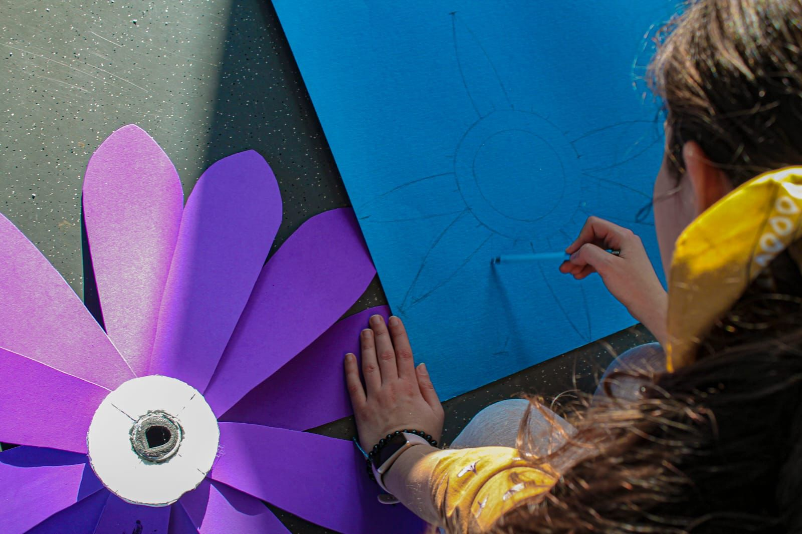

Il giardino di Esopo
Ispirato alle celebri Favole di Esopo e alle relative morali, Il giardino di Esopo è un progetto che trae le proprie radici dalla tesi di laurea della presidente della compagnia, realizzato con la collaborazione del comune di Olgiate Comasco. Il progetto consiste in uno spettacolo itinerante e site-specific e pone le sue radici nella concezione del teatro come mezzo per l'unione e la sinergia del territorio, visione sviluppata sulla base dell'esperienza delle residenze artistiche che svolgono la propria azione in stretto legame con la comunità e con il territorio stesso.
Il parco di Villa Camilla, trasformato attraverso l'intervento scenografico, costituirà l'ambientazione dello spettacolo. La scenografia si sviluppa in singoli elementi autoportanti da distribuire in tutto il parco, dando modo di creare un percorso immersivo nel quale far perdere grandi e piccoli in un'atmosfera da favola. L'evento, previsto per il 18 giugno 2023, in occasione dell'inaugurazione del parco di Villa Camilla, è il risultato di un'intensa rete di collaborazioni con le realtà del territorio dell'Olgiatese e lo spettacolo è inteso come evento comunitario di tutti e per tutti.
Laboratorio di scenografia
Il laboratorio di scenografia si tiene ogni finesettimana presso la sede del Magic Bus. L'attività ha coinvolto associazioni quali Avis Olgiate, La Lanterna, la Pro Loco Olgiatese e l'oratorio di Olgiate Comasco. Aperto a tutta la cittadinanza e senza limiti di età, durante queste giornate viene realizzata la scenografia dello spettacolo, portando i partecipanti a sperimentare e sviluppare un approccio creativo e pratico.
Collaborazioni con le realtà del territorio
Parte della scenografia è stata realizzata dai membri delle associazioni Agorà 97, Alveare e Centro Progetti Educativi attraverso laboratori specifici realizzati all'interno delle loro realtà. Al contempo con realtà quali il Corpo Musicale Olgiatese, DJ Arthur, 7grani, Brezza Poetica e Lumilhub sono state attivate collaborazioni differenti: dal supporto nei lavori pratici per scene e costumi alla messa a disposizione di volontari.

A spasso con Esopo!
Attraverso il progetto A spasso con Esopo! sono state avviate attività integrative presso le scuole primarie di Somaino e di San Gerardo. L'iniziativa ha come obiettivo lo stimolo della creatività e della manualità dei bambini, avvicinandoli al mondo del teatro e della scenografia, e di una coscienza di se stessi, rendendoli partecipi di un evento comunitario e culturale del territorio.
I bambini aderenti al progetto sono stati coinvolti dai membri della nostra compagnia in giochi teatrali, letture creative e laboratori artistici. I bambini, oltre a contribuire attivamente alla realizzazione e all'ideazione di parte della scenografia dello spettacolo, hanno poi partecipato a un percorso di avvicinamento alla recitazione e al lascito di Esopo.
Recitazione
Gli attori della nostra compagnia verranno accompagnati dagli studenti delle scuole elementari che copriranno il ruolo di comparse dello spettacolo. Si svolgeranno una serie di incontri con i bambini interessati, che avranno così modo di sperimentare lo studio dei loro personaggi, la presenza scenica, memoria e movimento, trucco e parrucco e vestizione.